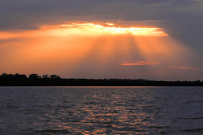
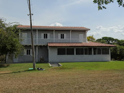
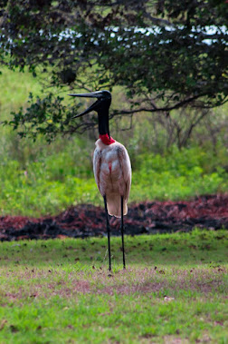

Pesca Esportiva
Barcos equipados e guias experientes para você pegar o Dourado, Pintado e Pacu.
A melhor experiência de pesca e natureza no coração do Pantanal.
Falar no WhatsApp
Barcos equipados e guias experientes para você pegar o Dourado, Pintado e Pacu.

Quartos com ar-condicionado, Wi-Fi e café da manhã pantaneiro incluso.

Passeios fotográficos para observar onças, tuiuiús e a beleza da fauna local.